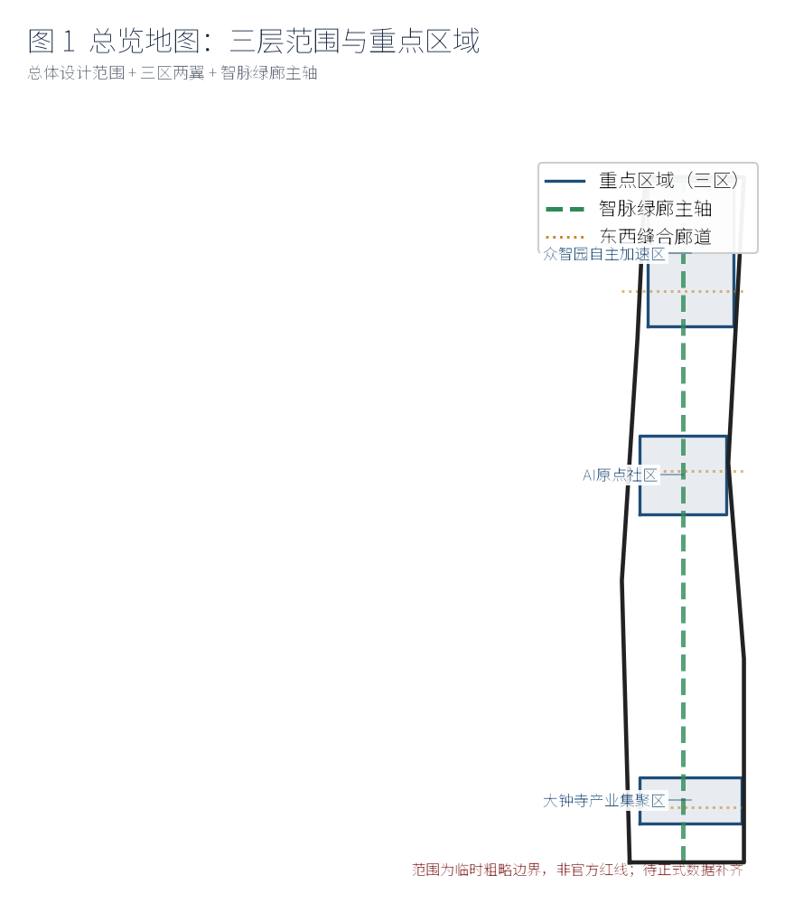
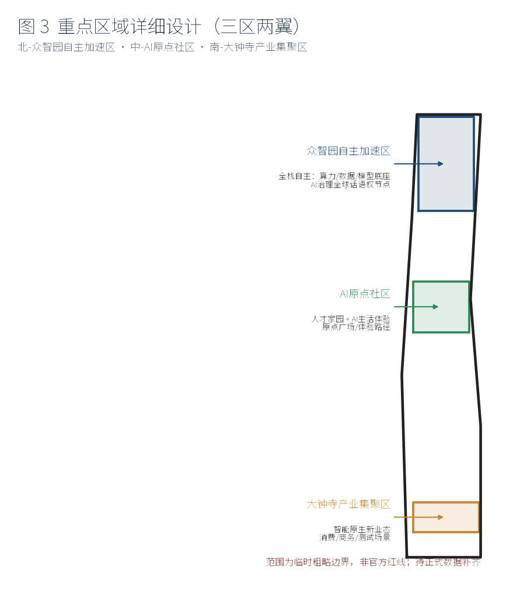
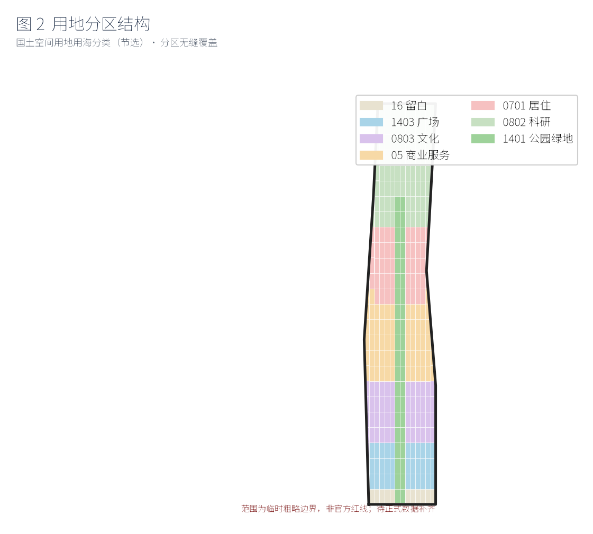
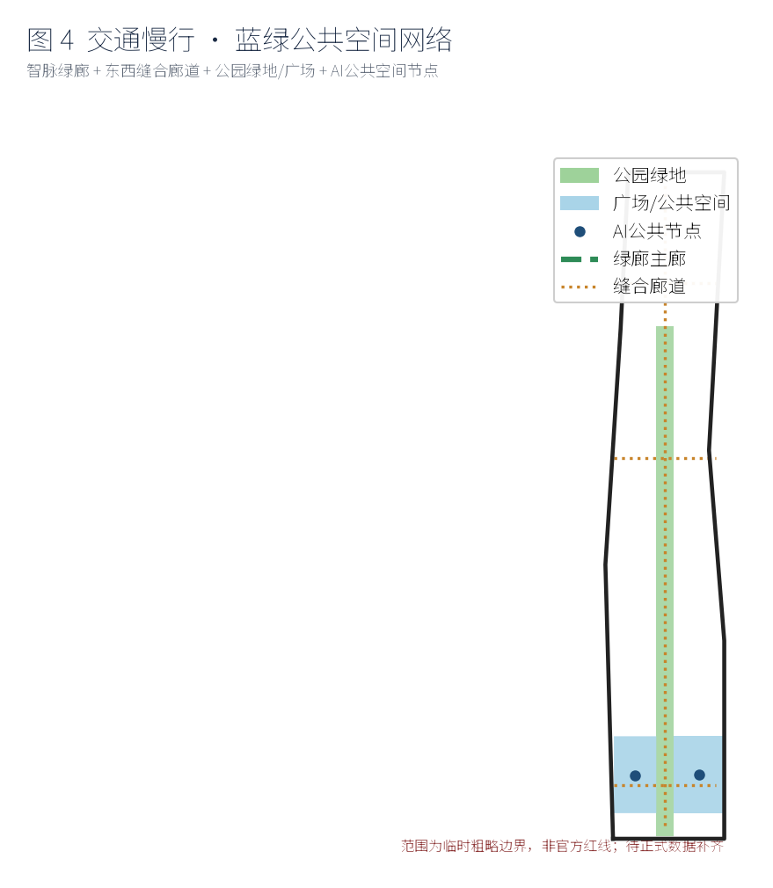
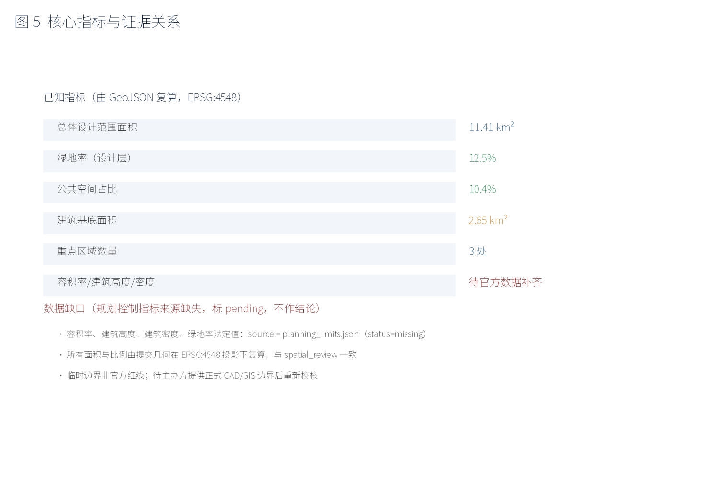

全部视频与三维场景为 AI 生成的概念可视化示意，非实地测绘或建成影像；空间落位均为概念建议、参考方案，供专业团队深化研究，不构成法定规划或政府审定结论。
封面总览

图：总体设计范围与重点区域总览（AI 辅助制图，概念示意）。
交互式空间场景（可体验 / 可展示）
交互网页：基于投稿几何数据的离线 3D/2.5D 场景，支持图层切换与地标/场景卡热点查看（无需联网，无外部依赖）。
在新页面打开交互场景 ↗
概念视频（AI 生成示意）
SC-05 遗址公园智能导览：基于位置的多语言文化叙事、AR 历史影像叠加与语音交互（概念示意，非实地影像）。
LM-03 百年铁轨数字叙事塔：工业遗产数字叙事、AI 共创成果展陈与 AR 触发点（概念示意，非实地影像）。
图示总览

重点区域（三区）划分

用地结构

慢行与蓝绿网络

指标与证据